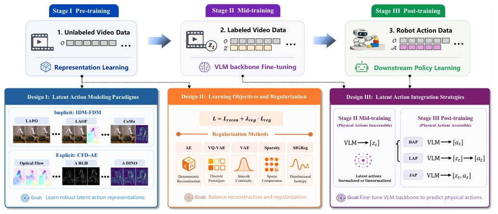
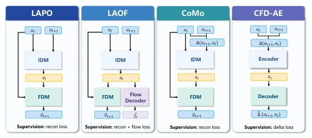
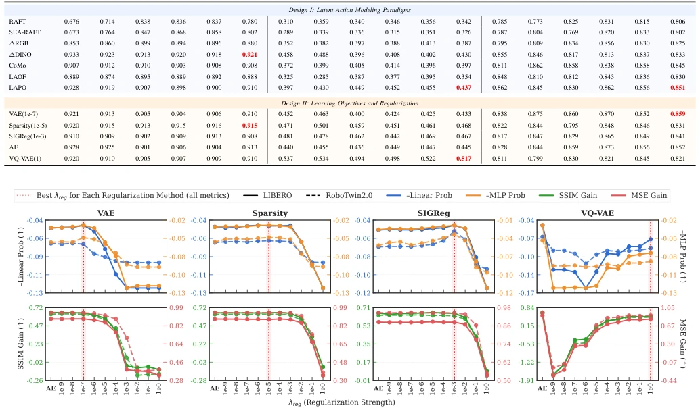
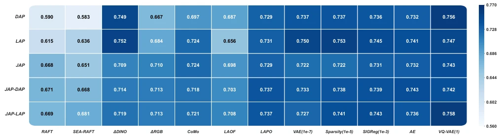
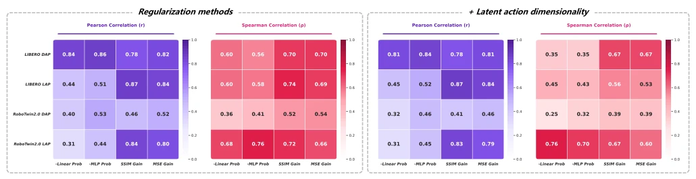
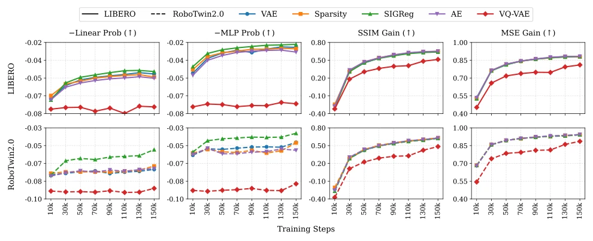
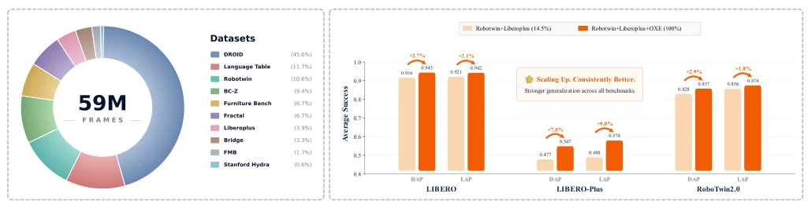
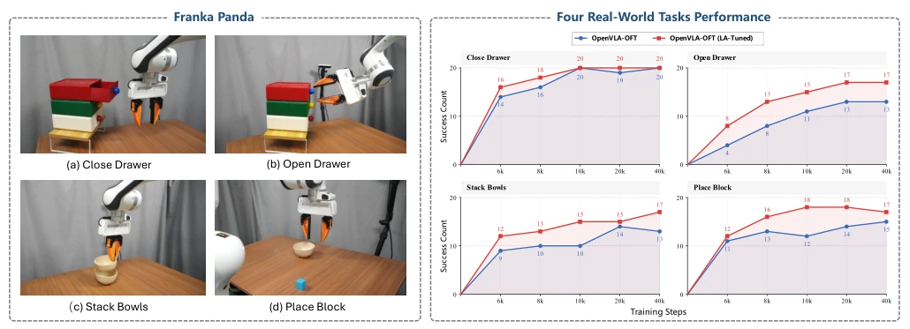

This paper did a great thing: it conducted a 'clean sweep' in the chaotic Latent Action Models (LAM) field. The authors did not pile up fancy modules like some papers do, but honestly conducted a 'brute-force test' of 41 design combinations. Ironically, they found that those complex regularization methods hyped up often work less well than simple AE or original LAPO, directly refuting the academic circle's unwritten rule that 'the more complex, the better'. However, the paper is also a bit of a 'humblebrag', claiming the optimal dimension is 32, but this might just 'look beautiful' on real robots, after all, the gap between simulation and reality still exists. Overall, this is a rare work of 'removing falsehood and keeping truth', although it did not invent a new model, it filled in the pitfalls of old models, worth reading for all those doing VLA and LAM, saving them from wasting compute on incorrect regularization parameters.
研究动机Motivation
具身智能领域长期面临一个尴尬局面：大规模视频数据唾手可得，但高质量的机器人动作数据却稀缺且昂贵。现有的Embodied Foundation Models（如VLA）大多依赖预训练的VLM或VGM，缺乏针对动作建模的专门进展。虽然Latent Action Models (LAM) 试图利用无标签视频学习紧凑的动作表征来替代物理动作，但当前研究极其碎片化。不同方法在动作建模范式、正则化策略和集成方式上各自为政，且实验设置不一致，导致无法判断哪些设计真正有效。此外，评估LAM质量缺乏可靠标准，现有工作多依赖训练轻量级探针（Probe）的误差作为代理指标，但这是否能真实反映下游策略性能尚存疑。正如文献[28]、[33]、[34]等所示，现有方法往往在孤立条件下提出，缺乏系统性对比，导致研究者难以识别决定下游性能的关键因素。
The embodied intelligence field has long faced an awkward situation: large-scale video data is readily available, but high-quality robot action data is scarce and expensive. Existing Embodied Foundation Models (such as VLA) mostly rely on pre-trained VLM or VGM, lacking specialized progress in action modeling. Although Latent Action Models (LAM) attempt to use unlabeled video to learn compact action representations to replace physical actions, current research is extremely fragmented. Different methods act independently in action modeling paradigms, regularization strategies, and integration methods, and experimental settings are inconsistent, leading to an inability to judge which designs are truly effective. Furthermore, there is a lack of reliable standards for evaluating LAM quality, existing works mostly rely on the error of training lightweight probes (Probe) as proxy metrics, but whether this truly reflects downstream policy performance is still questionable. As shown in references [28], [33], [34], etc., existing methods are often proposed under isolated conditions, lacking systematic comparison, leading to researchers finding it difficult to identify key factors determining downstream performance.

Fig. 1. Overview of design choices across three dimensions for latent action learning. Design I examines the impact of latent action modeling paradigms by comparing the implicit IDM-FDM framework with the explicit CFD-AE framework. Design II investigates how different regularization methods and their regularization strengths shape latent action representations and affect downstream policy learning. Design III evaluates the necessity of latent action normalization and investigates different strategies for integrating latent actions into physical action prediction. Stage I is trained on unlabeled video data consisting only of image frames, Stage II uses labeled video data paired with latent actions, and Stage III uses robot action data paired with physical actions. Further details of the thr
The paper constructs a unified three-stage training framework: Stage I (Pre-training) uses unlabeled video to learn high-quality Latent Action; Stage II (Mid-training) uses generated Latent Action to fine-tune VLM Backbone; Stage III (Post-training) uses a small amount of robot action data for downstream policy learning. The core innovation lies in the systematic ablation of 41 design choices across three dimensions: 1. Action Modeling Paradigm: Compared implicit IDM-FDM (such as LAPO, LAOF, CoMo) and explicit CFD-AE (based on pixel difference, DINO feature difference, optical flow). 2. Regularization and Objective: Systematically tested regularization methods and their hyperparameters such as AE, VQ-VAE, VAE, Sparsity, SIGReg, etc., finding that excessive regularization is not necessarily beneficial. 3. Integration Strategy: Compared architectures such as DAP (Direct Prediction), LAP (Latent to Action), JAP (Joint Prediction), etc., and explored the availability of physical actions during the fine-tuning stage. The overall process eliminates architectural differences through a unified Autoencoding framework, ensuring fair comparison. In particular, the authors proposed using FDM reconstruction metrics (SSIM/MSE Gain) as a more reliable proxy evaluation standard, rather than relying on additional action probes.

Fig. 2. Comparison of different latent action modeling paradigms. LAPO, LAOF, and CoMo follow the IDM-FDM framework to implicitly learn latent action representations, whereas CFD-AE based methods explicitly learn latent action representations.
Experiments were conducted on three benchmarks: LIBERO, LIBERO-Plus, RoboTwin2.0, and a real Franka Panda robot. The dataset contains approximately 59M frames of mixed video data. Main findings include: 1) Raw LAPO performs strongly under direct training, and simple DINO feature difference can also reach competitive levels; 2) Among regularization methods, properly tuned VAE or Sparsity performs comparably to non-regularized AE, but VQ-VAE performs poorly in continuous control tasks; 3) Latent Action dimension is best at 32, and no extra normalization is needed; 4) FDM reconstruction metrics (SSIM/MSE Gain) can more reliably predict downstream performance than probe error, but are only suitable for coarse-grained screening; 5) Using Latent Action to fine-tune VLM Backbone can significantly improve downstream policy initialization, and a Scaling Law exists. Real robot experiments validated the generalization of simulation results.

Fig. 3. Effect of regularization strength λreg on latent action learning for different regularization methods. The top row shows −Linear (blue) and −MLP (orange) probe losses, and the bottom row shows SSIM Gain (green) and MSE Gain (red) reconstruction metrics. Solid and dashed lines denote LIBERO and RoboTwin2.0, respectively. We select the regularization strength λreg using a composite metric defined as SSIM Gain+MSE Gain−MLP− Linear, with the chosen value indicated by the red vertical dashed lines. AE denotes the non-regularized baseline.

Fig. 4. Performance comparison of different action head architectures. Each cell reports the mean score over LIBERO, LIBERO-Plus, and RoboTwin2.0 for a specific combination of consecutive-frame motion representations (or regularization methods) and action head architecture. Darker colors indicate better average performance. DAP and LAP correspond to the Physical Action Inaccessible setting, where only latent actions are used to fine-tune the VLM backbone. In contrast, JAP, JAP-DAP, and JAP-LAP correspond to the Physical Action Accessible setting, where latent actions and physical actions are jointly used to fine-tune the VLM backbone.

Fig. 5. Correlation between proxy metrics and downstream robotic manipulation performance. The purple and red panels report the Pearson correlation (r) and Spearman correlation (ρ), respectively. The Regularization methods setting computes correlations over 21 experimental configurations obtained from AE together with VAE, Sparsity, SIGReg and VQ-VAE under different regularization strengths. The + Latent action dimensionality setting further augments these configurations with 8 additional experimental configurations using different latent action dimensionalities. LIBERO DAP/LAP and RoboTwin2.0 DAP/LAP denote results obtained by equipping the VLM with different action head architectures. −Linear Prob, −MLP Prob, SSIM Gain, and MSE Gain denote the four proxy metrics used to evaluate latent a

Fig. 6. Performance of different regularization methods throughout training. The four panels show the evolution of the proxy metrics −Linear Prob, −MLP Prob, SSIM Gain, and MSE Gain over 150K training steps. Solid and dashed lines denote results on LIBERO and RoboTwin2.0, respectively. Different colors indicate different regularization methods.

Fig. 9. Effect of VLM fine-tuning data scale on downstream robotic manipulation performance. The left panel illustrates the data mixtures used for VLM backbone fine-tuning, where OXE includes all datasets except Robotwin and Liberoplus. The right panel compares downstream robotic manipulation performance under the same Stage III training configuration using VLM backbones fine-tuned with the two data scales shown on the left.

Fig. 10. Real-World Experiments. The left panel illustrates our 7-DoF single-arm Franka Panda platform equipped with a 1-DoF UMI gripper and 4 representative manipulation tasks. For each task, 50 robot demonstrations are collected under joint position control. The right panel compares the task performance of OpenVLA-OFT and our OpenVLA-OFT (LA-Tuned) throughout training. We evaluate checkpoints at 6k, 8k, 10k, 20k, and 40k training steps. Each checkpoint is evaluated over 20 independent trials, resulting in 100 evaluations per task for each method. All experiments use only a single front-view RGB camera as the visual input.